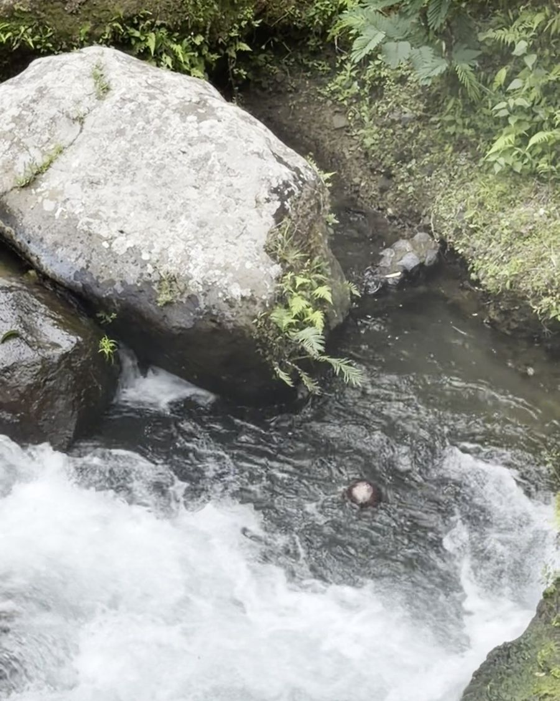
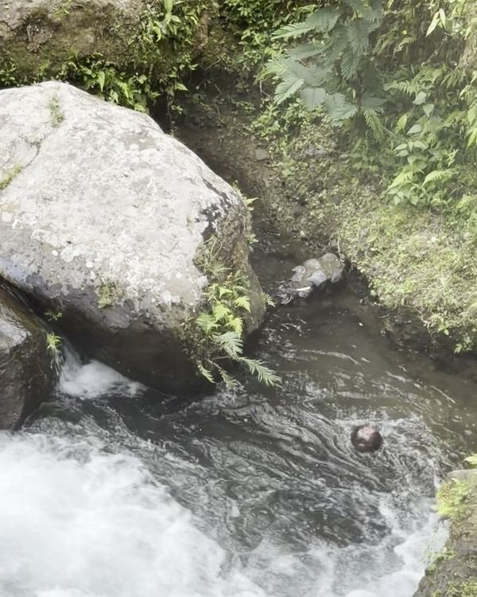

Interactive lab · filmed in Bali
The coconut that never escapes
A coconut circles behind a boulder in a Bali stream, while the chute beside it runs at ~2.5 m/s. Below is the same river from above, live. Push the river until it escapes.
Break it on purpose
Four ways to free the coconut
Predict first, then press the button. Each one sets up the sim and scrolls you back to it.
Flood it
A surge more than doubles the jet speed for a few seconds. The eddy is drowned and the shear layer sweeps the coconut out.
Overtop the boulder
Push U past ~3.5 m/s. Water starts pouring over the boulder, its shelter collapses, and the eddy loses its grip.
Make it heavier
At ρ ≥ 0.98 the coconut barely floats. The water diving down at the shear line pulls it under, and the underflow carries it away.
Make it lighter
A fresh green coconut (ρ ≈ 0.8) rises faster than the water can push it down. It is even harder to free. Why? Buoyancy.
The real thing
What I actually filmed
A 13.8-second clip from a stream in Bali. The coconut never left the calm water behind the boulder.


STILL · t ≈ 7.8 sIn 30 seconds
Why it can't get out
1 · A dead zone
The boulder blocks the near bank. Behind it the main flow separates, and the left-over slow water turns into a lateral eddy with closed streamlines. A floater just goes round and round.
The lateral eddy →2 · A wall of shear
Leaving means crossing the shear layer, where speed jumps from ~0.3 to ~2.5 m/s. Exchange across it is slow: about 19 s for this eddy, longer than the clip.
Residence time →3 · Float or dive
Water dives down along the shear line. A light coconut rises faster than it is pushed down and stays at the surface, trapped. A heavy one is dragged under and flushed away.
Buoyancy vs downwelling →